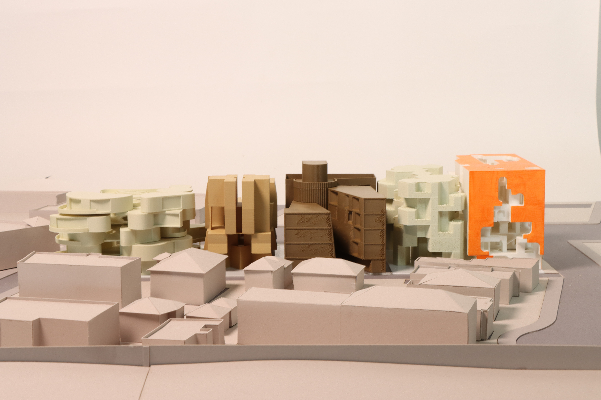
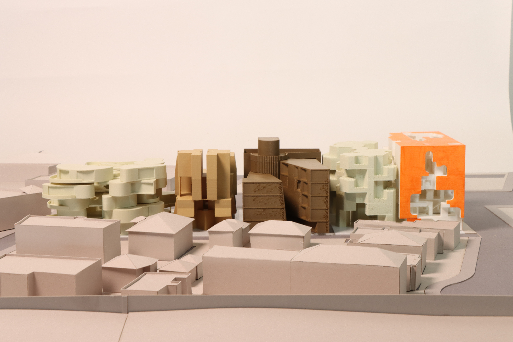

Destination-Journey Apartments
Carved from the local West Adams context, Destination-Journey Apartments is an excavation which invites a continually refreshing exploration of views and moments for those who reside in it. The mass of the building acts similiar to a geode, ruptured through its middle at a terracing angle by the rays of the sun, revealing layers of fragmented colors and views as you journey its corridors; specific fragments line up at four distinct points within the negative volume, pulling together a projection of colorful figures for those who seek to find these destinations. However, not all of these platforms and views are accessible, and by great intention: some will imbue an eternal feeling of longing to arrive at the destinations forever out of reach, reinforcing the desire and excitement to explore - the subconscious hope that, one day, a new passage will break open to provide a means to progress there.
While the fractures and views are intentionally found in a deconstructed manner, the physicality of the building embraces a rigid volumetric grid while simultaneously making it less visually apparent through different resolutions and figures. Each grid unit consumes an 11' cubic space, filled by either a full-sized cube or an array of slightly deviating arches and radii. The effect is a porous, but not empty, internal void within the geode and a unique figure carved into each face of the building that touches the boundary of the site, further contrasted by the thermochromic orange-red undulating pixel facade cladded to the massive figures.
SCI-Arc Design Studio 3A + SCI-Arc AS Tectonics (3A) / December 2023 / with Professors Margaret Griffin (Design Studio) and David Freeland (AS Tectonics)


 
